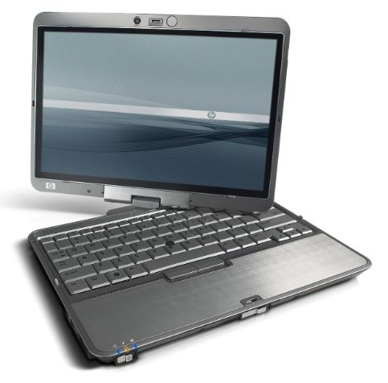

HP Compaq 2710p Owner's Guide
Originally written April 12, 2022. Revised August 23, 2022.

Pictured: HP Compaq 2710p Promotional Image. Courtesy of Hewlett-Packard.
Overview of the hardware
In 2007, HP announced and released the HP Compaq 2710p laptops. These were the replacement for the tc4400, which was just told that the door was right there. These used Intel's new Santa Rosa architecture, as did almost every laptop announced and released that year. It was architecturally superior to the tc4400, and took up much less power than it. However, not all successors succeed in the performance market. These laptops were significantly SLOWER than their older brother, and only ONE configuration is on par with it. More on that later...
So what you got with your ~$2,000 ultraportable Tablet PC was, an ultra low voltage Core 2 Duo processor that ran at clock speeds closer to megahertz than gigahertz HAMPERED by a 533MHz front side bus, integrated graphics that actually worked with Vista unlike the tc4400 which sucked with it, and DDR2 memory that... ran slower than the tc4400. Yes, HP did put 667MHz RAM into the 2710p! However, it only ran at an effective 533MHz. We were supposed to step forward, not behind. Did I also mention these laptops used the same exact hard drives the iPod classics used as opposed to the tc4400's SATA laptop drives? Shocking, I know. However, it wasn't always doom and gloom; the LED-backlit screen was eons better than the CCFL screen on the tc4400, and overall the whole laptop just looked better and felt better. They even removed the touchpad on the 2710p, but who used those anyway if you had a mouse or were sitting at a desk? Hell, you could use the TrackPoint if you loved nipples so much.
HP's subsequent tablet PCs fixed some issues with the 2710p, like the 2730p using a (micro)SATA hard disk and made the LV chips more common. Also, that got a touchpad! It wasn't a good laptop, but it WAS a step up. It wasn't until the 2740p and the 2760p when the laptops started catching up with some of HP's more mainline offerings. HP specifically designed these laptops to be more ergonomic and comfortable for those who used the pen inputs. A LOT of teachers had these, in fact! As VGA projectors rose in popularity, digital ink and paint was the way to go. These were GREAT machines for those who worked in classes, but they aged like milk.
Flaws of the system
If I'm honest, these machines aren't as reliable as the tc4400s were, but they didn't suck so bad! One of the main things I see with these laptops, however, is that they usually have a corner or 2 chipped off. HP cut manufacturing costs around the turn of the mid-late 2000s, so no surprise there. What's funny, however, is that the other xx10* laptops from the time were built like tanks compared to these slabs of what was basically aluminum foil compared to those. I had one of these 2710p laptops 7 years ago (and I am having one delivered today as of writing this!) and the trackpoint on that stopped working. So basically, it was either the mouse or the clunky pen. Once that trackpoint dies, it's not much of a "lap"-top anymore, is it? Hey, at least it's not the tx2000, those can burn in hell.
When compared to the tc4400, these are significantly less powerful processing-wise. They use the same hard drives seen in the thicker iPod classics... let that sink in. These usually ran at a painfully low 4200rpm and you could only bring them so far. Plus, these drives are no stranger to failure. A lot of old ZIF drives in 2710ps have went out because of how fragile they are as opposed to the de facto 2.5" drives. Did I also mention these were limited to IDE? Shocking, I know... no wonder why these didn't catch on in the laptop market! In 2007 for a laptop of this caliber, it was SATA or GTFO. HP chose another option, it seems...
Other than cosmetic flaws with average use, there's not much else to put here. These laptops were damn well reliable. Can it run Crysis? No. Can it do something at all? Absolutely. If anything, the 2710p is more reliable than the 2730p. That one was a rushed hackjob with the worst touchpad I've felt in my life and some overheating issues... Most of those do work now, but it honestly felt more like a prototype than a finished product. Did anyone else integrate their touchpad buttons directly onto the palmrest plastics? No.
Hardware configurations
HP Compaq 2710p laptops came in a variety of flavors, ranging from very slow to somewhat slow. However, we just need more detail for that!
Processors found in the HP Compaq 2710p
-Intel Core 2 Duo U7500 (1066MHz/533MHz FSB/2MB L2, slow)
-Intel Core 2 Duo U7600 (1200MHz/533MHz FSB/2MB L2, still slow)
-Intel Core 2 Duo U7700 (1333MHz/533MHz FSB/2MB L2, slow but not as slow)
-Intel Core 2 Duo L7700 (1800MHz/800MHz FSB/4MB L2, much faster, RARE!! Only sold in certain markets) Downclocked to 1.6GHz for a very strange reason.
Yes, the last one actually does exist! Here's a P/N: 500404-001. I have put one of these boards into my 2710p and it does provide a bit of a speed boost, but still falls short of the tc4400's potential with a T7600.
Okay, now you see why these were not as well received as the tc4400. Hampered chips, low clocks, and lower L2 compared to C2D tc4400s. Also, you couldn't even upgrade the CPU, unless your name is dosdude1. If someone can swap in a SL9380 or a T8300, I'm down. The latter will burn a hole or 2, though.
General recommendations
Again, not much to say here, but definitely redo the thermal paste/pads if heavily used. Also, these have some pretty dreadful rubber coating that you might want to take off. These also use old 1.8" ZIF hard disks, which SUCK to use with any OS. You can easily get an mSATA to ZIF adapter and put an SSD in; it's very much worth it.
Processor upgrades
You'd have to replace the motherboard. 500404-001 is the best you can get, but these are super hard to find! They have a C2D L7700 which is super fast compared to any of the ULV boards.
Storage, RAM, and Wi-Fi
For a storage drive, I would recommend an mSATA to ZIF IDE adapter with any high-quality mSATA disk.
The max RAM for these computers is 4GB. 8GB may be possible due to the nature of the 965 chipset.
Wireless cards I'm uncertain about, but pretty much any miniPCIe card should work with a no-whitelist BIOS. Not sure where that one is yet...
Any external DVD burner will work wonders. I know HP had a DVD-ROM drive that you could buy with any of their tablet PCs. Had USB, but with an extra ground pin tacked on to the point it was proprietary!
Operating system
For these systems, I recommend a 64-bit OS (32-bit if XP, 64-bit XP is absolutely painful...) of your choice. Windows XP-8.1 run fairly well on these machines once upgraded.
Any form of x86-64 GNU+Linux is also a viable option, and still works great on this hardware because of its basic platform.
As for a hackintosh, I did experiment around with it back in the day on a 2710p! Unfortunately, it's hard to pinpoint a good setup for it as almost all of the things I tried had problems.
I'm going to add a bit of a memo here, too. I had a 2710p back in 2015; 80GB hard disk, 3GB of RAM, 1.2GHz C2D, and err... too many OS installs. I had a thing for some reason, when my disk got full, I would just reinstall Windows again and again. I think I did this countless times to the point that may have been why my hard drive failed at some point. During those numerous reinstalls, I also tried some other cool things with that computer. Some longhorn builds worked, Niresh 10.10.1 was insufferable, 10.6 only worked on an external monitor (you can really use it as a desktop if your screen is broken), pretty much any Linux distro you could think of from the time worked, and Windows Vista 32-bit Ultimate with Service Pack 2 definitely worked. I know, a handful. But it's worth mentioning for the hell of it... these old 965 laptops were ubiquitous and pretty much anything worked on them. Obviously, not all BIOS interpretations are created equal, which may explain why hackintosh attempts almost always failed in one way or another. Would be interesting to try running Windows 11 on this... my dad would say it'd explode, but if it exceeds the limit, it won't. It'll just "get real ''cold'' until it's stiff and can't move", or in other terms, freeze. I'm fairly certain it's possible, and I'd love to try it just for the hell of it. Technically, these are some of the slowest computers to (unofficially) run Windows 11 after all... get me a U7500 with multicore disabled and we are in business.
Conclusion
The Compaq 2710p was popular among teachers, not so popular among power users. The tablet functionality is great for artists and presenters! There are better options, and you can even check a college surplus area to see if they have any sort of tablet PCs for sale. This isn't a laptop I would particularly recommend getting, but if you do have one and are thinking of putting it to good use, this is a good read. Again, not much to do other than clean it up and upgrade it, but that can be a good thing. The bigger articles I wrote are bigger solely because the subject has more problems. This on the other hand? Damn near flawless aside from questionable hardware choices.
The 2710p, along with other old tablet PCs excluding ThinkPads, usually don't go for much. There are listings where they sell for about $100 or so because it's a damn TPC, but I bought mine for $30 with a docking station. The docking station helps a lot if you need a somewhat internal DVD burner and more USB ports. I know a good amount of teachers that used these docks too, and they're a damn good help for work.
You honestly can't do too much with these unless you know how to optimize your OS to its limits (like in Gentoo?) but they do make good drawing tablets. The wider aspect ratio helps a bit compared to the tc4400; more horizontal space for options and more vertical space for a better view of your canvas. Not to mention, if you are the few who have one with the L7700, it pretty much blows a tc4400's chipset out of the water and performs about as well. There are also other tablet PCs from the era, like the X61t (AVOID SXGA+ MODELS!! The screen loves to leak itself on those.) and the Latitude XT1. Those were pretty good, too. The advantage of having an old tablet PC as opposed to a basic drawing tablet you connect to a desktop is that you can see where your strokes are going in a much easier way. The screens are absolutely tiny for some, don't get me wrong.... but it feels more natural to see what you're drawing as you touch your pen on a screen. The tc4400 and 4200 I've used to draw stuff on, and it's pretty good. However, the lower resolution does complicate certain things, like in PaintTool SAI. Overall, using such a system as a drawing tablet is a good and cheap way to repurpose an old computer or tablet. Plus, these later HP tablet PCs have incredible battery life due to their low-power nature. They're well built machines, but don't drop it off your table. If you do, expect a corner to be chipped off. Look, I know these laptops already cut a lot of corners, but please, I beg of you, don't cut any more!